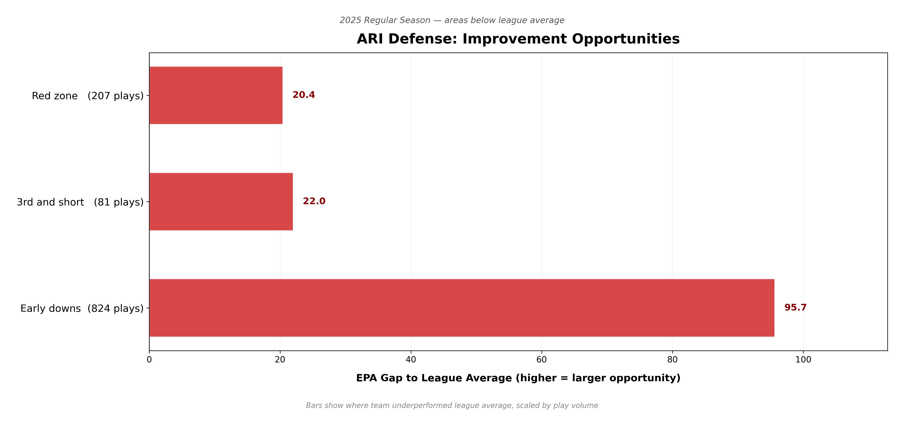
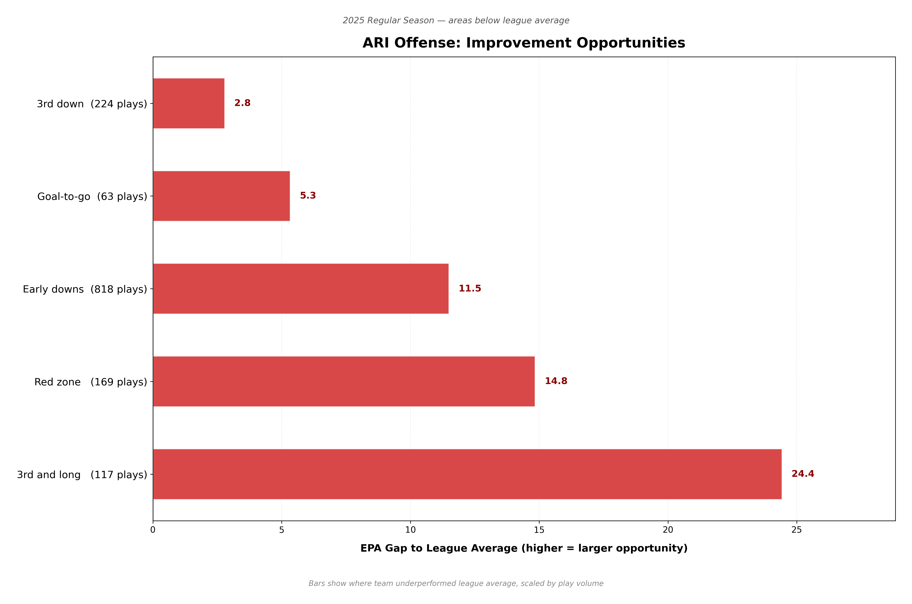

Generated 2026-02-26 14:53 | Public play-by-play data (nflverse) | Skill demonstration project
Built as a portfolio project to demonstrate data pipeline and analytical thinking. Uses public data only — does not account for scheme, film, medical, or internal scouting context.

| bucket | plays | TEAM_EPA_per_play | LG_EPA_per_play | TEAM_success_rate | LG_success_rate | EPA_gap_to_LG | Rank |
|---|---|---|---|---|---|---|---|
| DEF: Early downs | 824 | 0.132 | 0.016 | 0.490 | 0.440 | 95.658 | 29th/32 |
| DEF: 3rd & short (<=4) | 81 | 0.260 | -0.012 | 0.667 | 0.562 | 22.042 | 30th/32 |
| DEF: Red zone (<=20) | 207 | 0.096 | -0.003 | 0.444 | 0.423 | 20.447 | 24th/32 |
| Player | Pos / Age | Prev Team | Prior AAV |
|---|---|---|---|
| Devin Lloyd | LB | Age 27.2 | JAX | $3.2M |
| Quay Walker | LB | Age 25.7 | GB | $3.5M |
| Devin Bush | LB | Age 27.5 | CLE | $3.2M |
| Player | Pos / Age | Prev Team | Prior AAV |
|---|---|---|---|
| Alontae Taylor | CB | Age 27.1 | NO | $1.8M |
| Roger McCreary | CB | Age 25.9 | LAR | $2.3M |
| Jamel Dean | CB | Age 29.2 | TB | $13.0M |
| Player | Pos / Age | Prev Team | Prior AAV |
|---|---|---|---|
| Devin Lloyd | LB | Age 27.2 | JAX | $3.2M |
| Alontae Taylor | CB | Age 27.1 | NO | $1.8M |
| Greg Newsome | CB | Age 25.7 | JAX | $3.2M |

| bucket | plays | TEAM_EPA_per_play | LG_EPA_per_play | TEAM_success_rate | LG_success_rate | EPA_gap_to_LG | Rank |
|---|---|---|---|---|---|---|---|
| OFF: 3rd & long (>=7) | 117 | -0.315 | -0.106 | 0.291 | 0.313 | 24.432 | 25th/32 |
| OFF: Red zone (<=20) | 169 | -0.091 | -0.003 | 0.385 | 0.423 | 14.845 | 26th/32 |
| OFF: Early downs | 818 | 0.002 | 0.016 | 0.427 | 0.440 | 11.500 | 22nd/32 |
| OFF: Goal-to-go | 63 | -0.063 | 0.021 | 0.413 | 0.444 | 5.335 | 22nd/32 |
| OFF: 3rd down | 224 | -0.065 | -0.053 | 0.446 | 0.425 | 2.794 | 19th/32 |
| Player | Pos / Age | Prev Team | Prior AAV |
|---|---|---|---|
| Keenan Allen | WR | Age 34 | LAC | $3.0M |
| Christian Kirk | WR | Age 30 | HOU | $18.0M |
| Wan'Dale Robinson | WR | Age 25 | NYG | $2.0M |
| Player | Pos / Age | Prev Team | Prior AAV |
|---|---|---|---|
| Jauan Jennings | WR | Age 29 | SF | $5.9M |
| Jahan Dotson | WR | Age 26 | PHI | $3.8M |
| Adam Thielen | WR | Age 36 | PIT | $5.0M |
| Player | Pos / Age | Prev Team | Prior AAV |
|---|---|---|---|
| Travis Etienne | RB | Age 27 | JAX | $3.2M |
| Breece Hall | RB | Age 25 | NYJ | $2.3M |
| Kenneth Walker III | RB | Age 26 | SEA | $2.1M |
EPA gap = difference between ARI and league-average efficiency, scaled by play volume. Rank among teams with ≥30 plays per bucket. Situational buckets overlap (e.g. red zone plays also appear in early-down totals) — gaps are not additive. Does not account for opponent quality, scheme, or injury context.